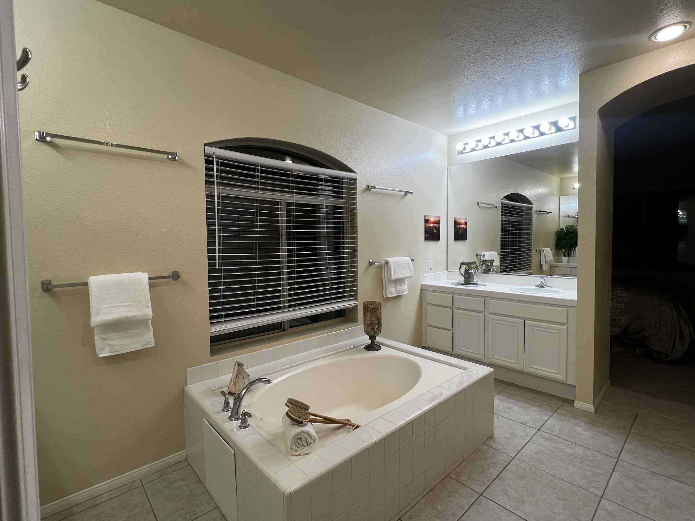
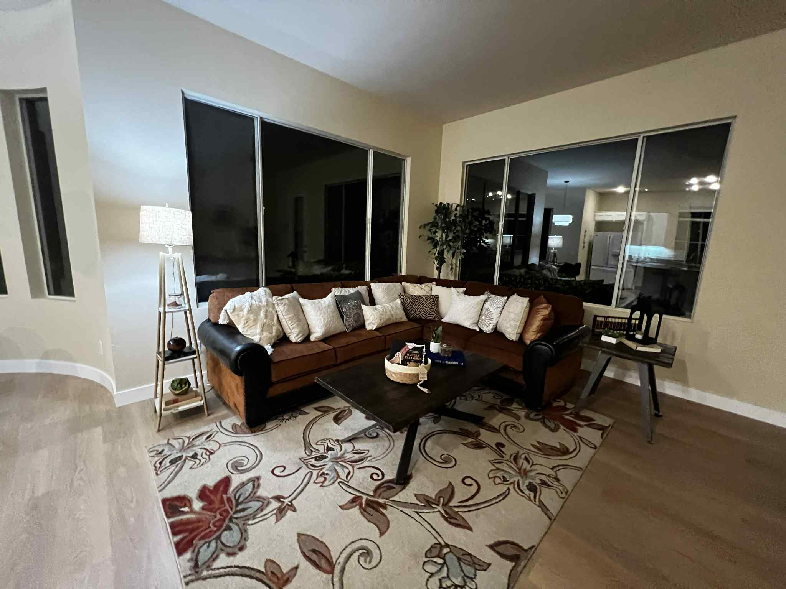
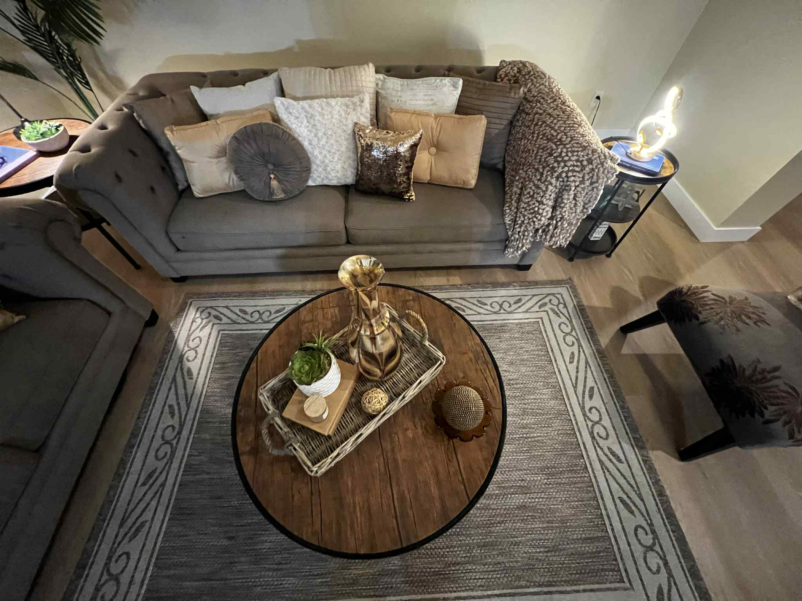
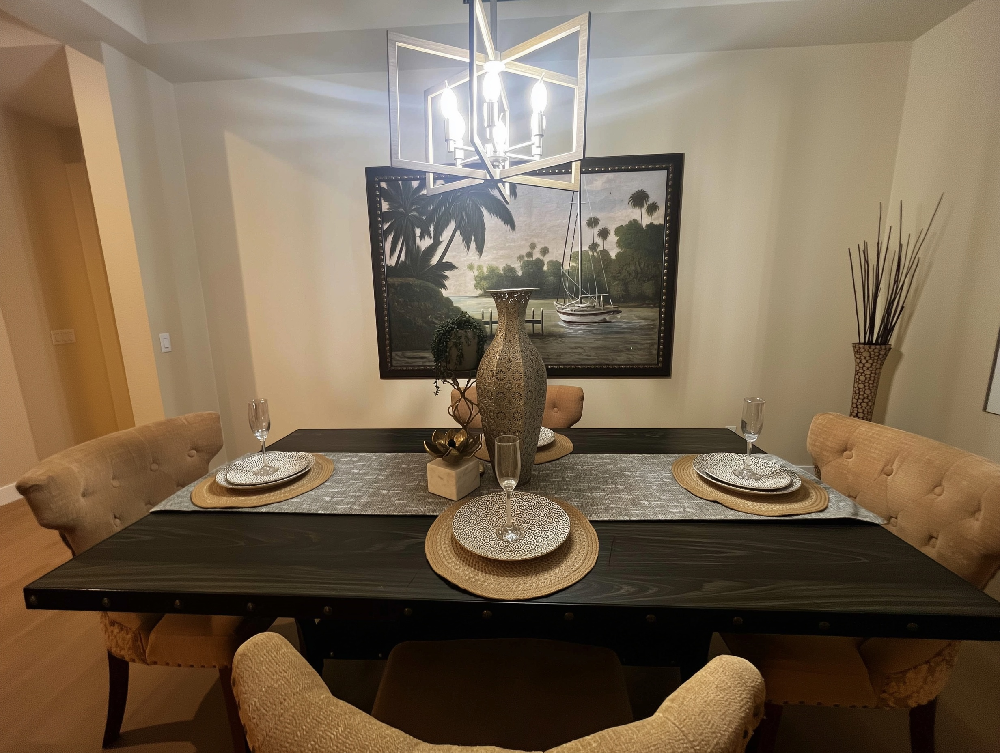
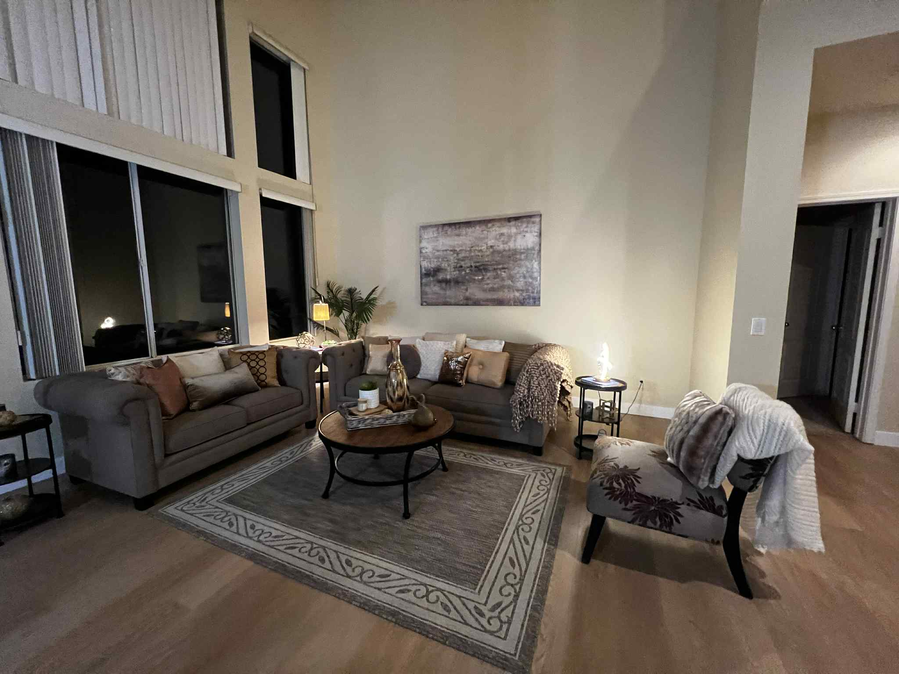

San Pasqual Retreat
Old San Pasqual Road, San Diego County, CA
Tucked away along Old San Pasqual Road, this serene home blends open, airy interiors with warm, welcoming design touches — perfectly staged to highlight its inviting flow and comfort. The staging emphasizes natural light through soaring ceilings and expansive windows while creating sophisticated yet relaxed atmospheres that invite both entertaining and everyday living.

Primary Bath: Bright and spacious spa-like bath with deep soaking tub, double vanities, and pristine tile finishes with minimalist accessories

Family Room: Casual retreat space anchored by rich-toned sectional with plush pillows, patterned rug, and warm lighting for relaxed evenings

Cozy Conversation Area: Intimate sofa arrangement with soft accent pillows, woven throw, and warm-toned area rug centered around curated round coffee table

Dining Room: Tailored setup with upholstered chairs and sleek black table, featuring textured vase centerpiece framed by tropical landscape artwork

Great Room: Soaring ceilings and expansive windows with neutral-toned seating, layered textures, and subtle metallic accents for sophisticated relaxed atmosphere